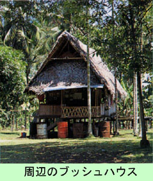

|
第３５ 海岸沿いに、夜に火をたき敵を欺く
猛軍の前線基地フインシュハーフェンに有力な敵大部隊が昭和１８年９月×日、上陸してきた。マダンより遥か後方のハンサに上陸し
て、陸路マダンを経てフインシュハーフエンまで進撃して行った第二十師団（京城編成部隊）は、上陸した敵を要撃したが、後方から
の補給が続かず、マダンまで退却する事になった。この時すでに第二十師団長青木中将は戦死していた。
フインシュハーフェンからマダンに退却する途中、第二十師団長（片桐茂陸軍中将）は、友軍の劣勢を敵に見せず、逆に恐怖心を敵
に与える作戦を敢然として、威圧作戦を敢行したのです。その頃は敵の戦力が、余りにも強大だったので、友軍の位置が解ると、洋上
の敵魚雷艇から攻撃される恐れがあるので、夜は絶対に火はたかなかった。隠密行動を取っていのです。昼間の食事の時でも、敵機か
ら発見されないように、炊飯の煙をたてなかった。敵から攻撃されても、こちらの陣容が判るので応戦はしなかった。誠に不甲斐ない
事とは思っていましたが、やむをえませんでした。我に食料もなく、武器弾薬の補給もなく、装備が劣悪、劣勢であったので仕方のな
い戦法でした。

そんな戦況下にも拘らず、マダンに退却中の日本軍が、夜になって海岸線に沿って３キロ以上の距離に亘り野営した時、わざと、あ
かあかと火をたき炊事をさせ、大部隊が居るように見せかけるという大胆な行動を取った。ガリ、シオ方面の戦闘で、友軍の取った捨
て身の戦法でした。友軍の位置を敵に知られると言う事は、全滅に繋がる恐れが十分にあったのです。
この奇想天涯の作戦が見事に成功し、悠々とマダンまで退却できました。捨て身の戦法で敵の肝を冷やし、悠々とマダンに撤収でき
た痛快な作戦でした。
|